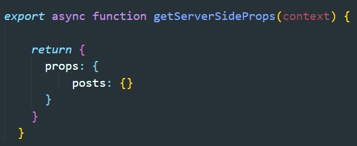

Если мы используем SSR то для получения данных от API лучше всего использовать getServerSideProps.
Как видите, getServerSideProps похож на getStaticProps, но разница в том, что getServerSideProps запускается при каждом запросе, а не во время сборки.

В случае если у нас в URL имеются переменные (например ID записей) то мы можем получить к ним доступ с помощью контекста. Для это в функции getServerSideProps в качестве входного параметра получим этот context
context - это объект который имеет следующие свойства